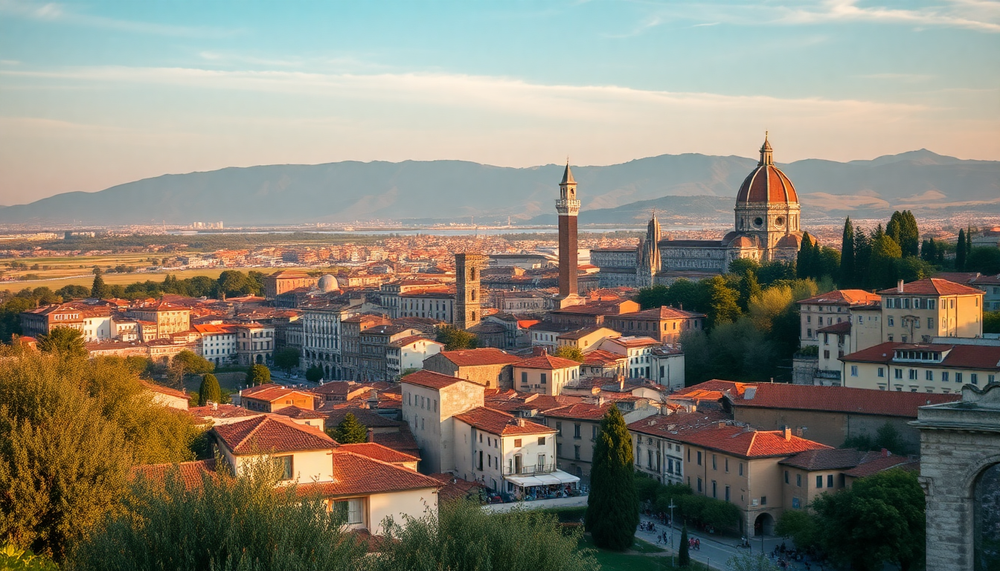

Best Time to Visit Italy: Month-by-Month Guide for 2025

I’ve been to Italy six times across every season, and I still get tripped up on timing. The "best" time depends on whether you want empty piazzas or warm beach days. Here’s exactly what to expect month by month for 2025, based on real trips to Rome, Florence, Venice, and Milan.
When is the best overall time to visit Italy in 2025?
Late spring (April–May) and early fall (September–October) are your sweet spots. Crowds are thinner than summer, temperatures sit in the low 70s, and hotel rates haven’t peaked yet. I booked a room at Hotel Artemide near Termini for €180 in mid-May 2024—same room was €350 in August.
- April–May: 60–75°F, occasional rain, full bloom in gardens like Boboli in Florence.
- September–October: 65–80°F, still warm enough for an Aperol Spritz at Caffè Florian in Venice, but no sweat.
- Avoid: August (heat + crowds) and November (many coastal spots close).
Is January worth visiting for lower prices?
Yes, but bring a coat. I spent a week in Milan and Rome in January 2024, and the only real downside was shorter daylight. Prices at Hotel Berna in Milan dropped to €120/night. The Vatican Museums had no line at 8:30 AM.
- Weather: 35–50°F in Rome and Florence; colder in Milan (30–45°F), with possible fog over the Grand Canal in Venice.
- Crowds: Minimal. You’ll share the Uffizi Gallery with maybe 50 other people.
- Bonus: The Venice Carnival kicks off in late January or early February—book accommodation six months ahead.
Does February still have winter magic or is it just cold?
February is raw but rewarding. I walked the Rialto Bridge in Venice during a light snow—empty, silent, nothing like the summer crush. The Carnevale parades are worth the chill, but pack waterproof boots; St. Mark’s Square floods during acqua alta.
- Highlights: Carnevale in Venice (check 2025 dates—usually mid-February).
- Downside: Many restaurants in Florence’s Oltrarno neighborhood close for a week in February.
- Pro tip: Use the Trenitalia Frecciarossa trains—they’re warm, punctual, and cheap in winter (Rome to Florence for €30).
What’s the trick to visiting Italy in March?
March is unpredictable. I’ve had sunny 70°F days in Rome and sleet in Milan within the same week. The upside: Easter usually falls in March or April, and the Scrovegni Chapel in Padua (easy day trip from Venice) is nearly empty before Holy Week.
- Weather swings: 45–65°F. Layer up.
- Crowds: Moderate. Spring break brings school groups to the Colosseum.
- Easter tip: The Pope’s Mass at St. Peter’s Square requires free tickets months in advance—or watch from Via della Conciliazione without a pass.
Why is April the most recommended month?
April is the goldilocks month. I did a walking tour of Trastevere in Rome and sat outside at Da Enzo without needing a reservation. The Florence Cathedral dome climb had a 20-minute wait, not two hours.
- Temperatures: 55–70°F. Perfect for walking the Ponte Vecchio.
- Events: Scoppio del Carro (Explosion of the Cart) in Florence on Easter Sunday.
- Crowds: Rising fast by the last week. Book Hotel Palazzo Guadagni in Florence by February.
Does May deliver on weather and fewer tourists?
May is the best month for most people—if you can handle the price. I paid €220 for a room at Hotel Londra Palace in Venice (normally €400+ in June). The Giardini della Biennale are in full bloom, and the Trevi Fountain is manageable at 7 AM.
- Weather: 60–75°F, almost no rain.
- Crowds: Heavy in Rome and Florence by mid-month, but still better than June.
- Don’t miss: The Festa della Repubblica parade on June 2 (book early for grandstand seats).
Is June already too crowded and hot?
June is the tipping point. I loved the energy at Piazza della Signoria in Florence, but the line for Galleria dell’Accademia (David) hit 90 minutes by 10 AM. Temperatures hit 85°F in Rome, and the Vatican Gardens tour felt like a sauna.
- Best move: Book skip-the-line tickets for the Colosseum and Uffizi at least three weeks out.
- Coastal alternative: Skip the cities for Cinque Terre—the trails are open and water is swimmable.
- Crowd level: 8/10 in Venice and Florence; 7/10 in Milan.
Should I avoid July and August entirely?
Not entirely, but have a plan. I made the mistake of visiting the Roman Forum at 2 PM in July—never again. Stick to early mornings and late evenings. In Milan, the Navigli district comes alive at 10 PM when the heat drops.
- July: 85–95°F. Trevi Fountain at 6 AM or skip it.
- August: Peak heat + Ferragosto (August 15) shuts down many family-run trattorias like Trattoria Sostanza in Florence for two weeks.
- Strategy: Stay at Hotel Artemide (has rooftop breakfast) and do tours at 8 AM. Spend afternoons in air-conditioned museums like the Galleria Borghese.
Is September the secret sweet spot?
September is my favorite month. The water is still warm at Lido di Venezia, but the summer crowds thin out after the first week. I walked into Osteria Francescana in Modena (a quick train from Florence) for a lunch reservation the same day.
- Weather: 65–80°F. Perfect for the Milan Duomo rooftop walk.
- Crowds: Moderate. The Venice Film Festival (late August–early September) brings celebs, but the city feels normal.
- Events: Regata Storica in Venice (first Sunday).
What about October for fall colors and food?
October delivers crisp air and fewer tourists. I spent an afternoon at Castello Sforzesco in Milan with hardly anyone around. The Truffle Festival in San Miniato (Tuscany) is a 90-minute train ride from Florence.
- Weather: 55–70°F. Bring a jacket for evenings.
- Crowds: Low to moderate. The Vatican Museums had a 10-minute wait in October 2023.
- Food: Porcini mushroom season in Umbria—order tagliatelle ai porcini at La Taverna del Lupo in Gubbio.
Is November a ghost town in Italian cities?
November is quiet, but many attractions have reduced hours. The Venice Biennale architecture exhibition runs through late November, so the city has some cultural buzz. I walked the Scala Contarini del Bovolo staircase without another soul.
- Weather: 40–55°F. Rain is common in Venice and Milan.
- Closed: Many coastal restaurants and hotels in Cinque Terre and Amalfi.
- Deal: Hotel Berna in Milan drops to €90/night. Use the savings for a Trenitalia pass.
Does December have holiday charm or just cold?
December is magical if you love Christmas markets. The Piazza Navona market in Rome is touristy but fun for kids. Milan’s Galleria Vittorio Emanuele II has a massive tree. I found Venice nearly empty the week before Christmas—just locals and fog.
- Weather: 35–50°F. Pack a thermal layer.
- Christmas Eve: Many restaurants close by 8 PM. Reserve at Il Pagliaccio in Rome months ahead.
- New Year’s Eve: Piazza del Popolo in Rome has free concerts, but book your hotel by October.
FAQ
What’s the cheapest month to fly to Italy? January and February consistently have the lowest airfare from the US and UK. I found round-trip flights to Milan for $450 in January 2024. Hotels in Rome’s Termini area also drop 40% compared to June.
When is the worst time for cruise ship crowds in Venice? May through September, especially Wednesdays and Saturdays. The Piazzale Roma bus station and Rialto Bridge get swamped. Visit in November or December for empty canals.
Should I buy a Firenze Card or skip-the-line passes for 2025? Skip-the-line tickets for individual attractions (Colosseum, Uffizi, Last Supper) are cheaper than city-wide passes. The Firenze Card only saves money if you visit 5+ museums in 72 hours—most people don’t.
Conclusion
- Best overall: April–May or September–October for weather and manageable crowds.
- Cheapest: January–February (except Venice during Carnevale).
- Avoid: August for heat and closures; November for limited hours.
- Book early: Skip-the-line tickets for the Colosseum and Last Supper at least a month ahead.
- Pack smart: Layers in spring/fall, waterproof shoes for Venice year-round.